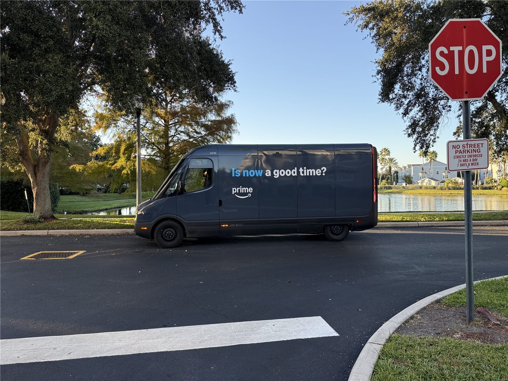

‘봉고의 DNA’ 전기차로 부활… 우주선 같은 전기 PBV 기아 ‘PV5’ 타보니
서민의 발이던 ‘봉고’의 유전자가 전기 목적기반차량(PBV)으로 되살아났다. 기아의 전기 PBV ‘PV5’를 직접 타 본 시승기가 소개됐다.
강패산 기자 · 2026.07.20
橋한국

경향신문은 기아의 전기 PBV ‘PV5’ 시승기를 전하며, 수십 년간 진화해 온 ‘봉고차’의 계보를 함께 조명했다. ‘우주선 같은’ 실내와 넓은 활용성이 특징으로 소개됐다.
광고 문의 · 300×250목적기반차량(PBV)은 승객 운송, 물류 배송, 이동식 매장 등 용도에 맞춰 내부 공간을 유연하게 바꿀 수 있는 차량이다. 전동화와 결합해 다양한 산업 수요에 대응하는 형태로 주목받고 있다.
‘봉고’로 상징되는 다목적 상용차는 오랜 기간 자영업자와 소상공인의 생계 수단이었다. 그 실용의 전통이 전기차 시대에 맞춰 새로운 공간 개념으로 확장되는 셈이다.
전기 상용차는 유지비 절감과 친환경이라는 장점과 함께, 충전 인프라와 주행거리라는 과제를 동시에 안고 있다. 실제 보급 속도는 이러한 조건에 따라 좌우될 전망이다.
華橋時報는 기술 변화가 생활의 도구를 어떻게 바꾸는지에 주목한다. 서민의 이동수단이 시대에 맞춰 진화해 온 궤적은, 산업과 삶이 서로 맞물려 나아간다는 사실을 보여 준다.
출처·참고 (사실 확인용 — 본문은 직접 재작성)
· 경향신문
· 경향신문